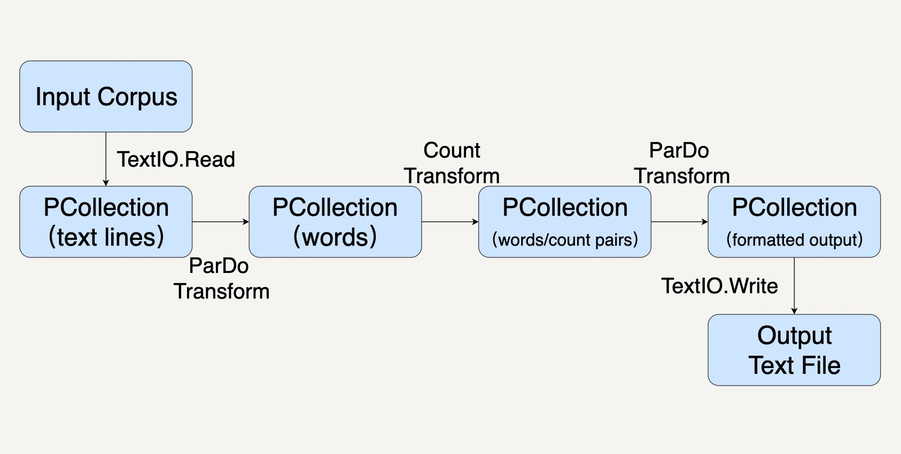

- 00 开篇词 从这里开始，带你走上硅谷一线系统架构师之路.md.html
- 01 为什么MapReduce会被硅谷一线公司淘汰？.md.html
- 02 MapReduce后谁主沉浮：怎样设计下一代数据处理技术？.md.html
- 03 大规模数据处理初体验：怎样实现大型电商热销榜？.md.html
- 04 分布式系统（上）：学会用服务等级协议SLA来评估你的系统.md.html
- 05 分布式系统（下）：架构师不得不知的三大指标.md.html
- 06 如何区分批处理还是流处理？.md.html
- 07 Workflow设计模式：让你在大规模数据世界中君临天下.md.html
- 08 发布_订阅模式：流处理架构中的瑞士军刀.md.html
- 09 CAP定理：三选二，架构师必须学会的取舍.md.html
- 10 Lambda架构：Twitter亿级实时数据分析架构背后的倚天剑.md.html
- 11 Kappa架构：利用Kafka锻造的屠龙刀.md.html
- 12 我们为什么需要Spark？.md.html
- 13 弹性分布式数据集：Spark大厦的地基（上）.md.html
- 14 弹性分布式数据集：Spark大厦的地基（下）.md.html
- 15 Spark SQL：Spark数据查询的利器.md.html
- 16 Spark Streaming：Spark的实时流计算API.md.html
- 17 Structured Streaming：如何用DataFrame API进行实时数据分析_.md.html
- 18 Word Count：从零开始运行你的第一个Spark应用.md.html
- 19 综合案例实战：处理加州房屋信息，构建线性回归模型.md.html
- 20 流处理案例实战：分析纽约市出租车载客信息.md.html
- 21 深入对比Spark与Flink：帮你系统设计两开花.md.html
- 22 Apache Beam的前世今生.md.html
- 23 站在Google的肩膀上学习Beam编程模型.md.html
- 24 PCollection：为什么Beam要如此抽象封装数据？.md.html
- 25 Transform：Beam数据转换操作的抽象方法.md.html
- 26 Pipeline：Beam如何抽象多步骤的数据流水线？.md.html
- 27 Pipeline I_O_ Beam数据中转的设计模式.md.html
- 28 如何设计创建好一个Beam Pipeline？.md.html
- 29 如何测试Beam Pipeline？.md.html
- 30 Apache Beam实战冲刺：Beam如何run everywhere_.md.html
- 31 WordCount Beam Pipeline实战.md.html
- 32 Beam Window：打通流处理的任督二脉.md.html
- 33 横看成岭侧成峰：再战Streaming WordCount.md.html
- 34 Amazon热销榜Beam Pipeline实战.md.html
- 35 Facebook游戏实时流处理Beam Pipeline实战（上）.md.html
- 36 Facebook游戏实时流处理Beam Pipeline实战（下）.md.html
- 37 5G时代，如何处理超大规模物联网数据.md.html
- 38 大规模数据处理在深度学习中如何应用？.md.html
- 39 从SQL到Streaming SQL：突破静态数据查询的次元.md.html
- 40 大规模数据处理未来之路.md.html
- FAQ第一期 学习大规模数据处理需要什么基础？.md.html
- FAQ第三期 Apache Beam基础答疑.md.html
- FAQ第二期 Spark案例实战答疑.md.html
- 加油站 Practice makes perfect！.md.html
- 结束语 世间所有的相遇，都是久别重逢.md.html
- 捐赠
31 WordCount Beam Pipeline实战
你好，我是蔡元楠。
今天我要与你分享的主题是“WordCount Beam Pipeline实战”。
前面我们已经学习了Beam的基础数据结构PCollection，基本数据转换操作Transform，还有Pipeline等技术。你一定跃跃欲试，想要在实际项目中使用了。这一讲我们就一起学习一下怎样用Beam解决数据处理领域的教科书级案例——WordCount。
WordCount你一定不陌生，在第18讲中，我们就已经接触过了。WordCount问题是起源于MapReduce时代就广泛使用的案例。顾名思义，WordCount想要解决的问题是统计一个文本库中的词频。
比如，你可以用WordCount找出莎士比亚最喜欢使用的单词，那么你的输入是莎士比亚全集，输出就是每个单词出现的次数。举个例子，比如这一段：
HAMLET
ACT I
SCENE I Elsinore. A platform before the castle.
[FRANCISCO at his post. Enter to him BERNARDO]
BERNARDO Who's there?
FRANCISCO Nay, answer me: stand, and unfold yourself.
BERNARDO Long live the king!
FRANCISCO Bernardo?
BERNARDO He.
FRANCISCO You come most carefully upon your hour.
BERNARDO 'Tis now struck twelve; get thee to bed, Francisco.
FRANCISCO For this relief much thanks: 'tis bitter cold,
And I am sick at heart.
BERNARDO Have you had quiet guard?
FRANCISCO Not a mouse stirring.
BERNARDO Well, good night.
If you do meet Horatio and Marcellus,
The rivals of my watch, bid them make haste.
FRANCISCO I think I hear them. Stand, ho! Who's there?
在这个文本库中，我们用“the: 数字”表示the出现了几次，数字就是单词出现的次数。
The: 3
And: 3
Him: 1
...
那么我们怎样在Beam中处理这个问题呢？结合前面所学的知识，我们可以把Pipeline分为这样几步：
- 用Pipeline IO读取文本库（参考第27讲）；
- 用Transform对文本进行分词和词频统计操作（参考第25讲）；
- 用Pipeline IO输出结果（参考第27讲）；
- 所有的步骤会被打包进一个Beam Pipeline（参考第26讲）。
整个过程就如同下图所示。

创建Pipeline
首先，我们先用代码创建一个PipelineOptions的实例。PipelineOptions能够让我们对Pipeline进行必要的配置，比如配置执行程序的Runner，和Runner所需要的参数。我们在这里先采用默认配置。
记得第30讲中我们讲过，Beam Pipeline可以配置在不同的Runner上跑，比如SparkRunner，FlinkRunner。如果PipelineOptions不配置的情况下，默认的就是DirectRunner，也就是说会在本机执行。
Java
PipelineOptions options = PipelineOptionsFactory.create();
接下来，我们就可以用这个PipelineOptions去创建一个Pipeline了。一个Pipeline实例会去构建一个数据处理流水线所需要的数据处理DAG，以及这个DAG所需要进行的Transform。
Java
Pipeline p = Pipeline.create(options);
应用Transform
在上面的设计框图中，我们可以看到，我们需要进行好几种Transform。比如TextIO.Read、ParDo、Count去读取数据，操纵数据，以及存储数据。
每一种Transform都需要一些参数，并且会输出特定的数据。输入和输出往往会用PCollection的数据结构表示。简单回顾一下，PCollection是Beam对于数据集的抽象，表示任意大小、无序的数据，甚至可以是无边界的Streaming数据。
在我们这个WordCount例子中，我们的Transform依次是这样几个。
第一个Transform，是先要用TextIO.Read来读取一个外部的莎士比亚文集，生成一个PCollection，包含这个文集里的所有文本行。这个PCollection中的每个元素都是文本中的一行。
Java
PCollection<String> lines = p.apply(TextIO.read().from("gs://apache-beam-samples/shakespeare/*"));
第二个Transform，我们要把文本行中的单词提取出来，也就是做分词（tokenization）。
这一步的输入PCollection中的每个元素都表示了一行。那么输出呢？输出还是一个PCollection，但是每个元素变成了单词。
你可以留意一下，我们这里做分词时，用的正则表达式[^\p{L}]+，意思是非Unicode Letters所以它会按空格或者标点符号等把词分开。
Java
PCollection<String> words = lines.apply("ExtractWords", FlatMapElements
.into(TypeDescriptors.strings())
.via((String word) -> Arrays.asList(word.split("[^\\p{L}]+"))));
第三个Transform，我们就会使用Beam SDK提供的Count Transform。Count Transform会把任意一个PCollection转换成有key/value的组合，每一个key是原来PCollection中的非重复的元素，value则是元素出现的次数。
Java
PCollection<KV<String, Long>> counts = words.apply(Count.<String>perElement());
第四个Transform会把刚才的key/value组成的PCollection转换成我们想要的输出格式，方便我们输出词频。因为大部分的时候，我们都是想要把输出存储到另一个文件里的。
Java
PCollection<String> formatted = counts.apply("FormatResults", MapElements
.into(TypeDescriptors.strings())
.via((KV<String, Long> wordCount) -> wordCount.getKey() + ": " + wordCount.getValue()));
最后一个Transform就是TextIO.Write用来把最终的PCollection写进文本文档。PCollection中的每一个元素都会被写为文本文件中的独立一行。
运行Pipeline
调用Pipeline的run()方法会把这个Pipeline所包含的Transform优化并放到你指定的Runner上执行。这里你需要注意，run()方法是异步的，如果你想要同步等待Pipeline的执行结果，需要调用waitUntilFinish()方法。
Java
p.run().waitUntilFinish();
改进代码的建议
代码看起来都完成了，不过，我们还可以对代码再做些改进。
编写独立的DoFn
在上面的示例代码中，我们把Transform都inline地写在了apply()方法里。
Java
lines.apply("ExtractWords", FlatMapElements
.into(TypeDescriptors.strings())
.via((String word) -> Arrays.asList(word.split("[^\\p{L}]+"))));
但是这样的写法在实际工作中很难维护。
一是因为真实的业务逻辑往往比较复杂，很难用一两行的代码写清楚，强行写成inline的话可读性非常糟糕。
二是因为这样inline的Transform几乎不可复用和测试。
所以，实际工作中，我们更多地会去继承DoFn来实现我们的数据操作。这样每个DoFn我们都可以单独复用和测试。
接下来，我们看看怎样用用DoFn来实现刚才的分词Transform？
其实很简单，我们继承DoFn作为我们的子类ExtracrtWordsFn，然后把单词的拆分放在DoFn的processElement成员函数里。
Java
static class ExtractWordsFn extends DoFn<String, String> {
private final Counter emptyLines = Metrics.counter(ExtractWordsFn.class, "emptyLines");
private final Distribution lineLenDist =
Metrics.distribution(ExtractWordsFn.class, "lineLenDistro");
@ProcessElement
public void processElement(@Element String element, OutputReceiver<String> receiver) {
lineLenDist.update(element.length());
if (element.trim().isEmpty()) {
emptyLines.inc();
// Split the line into words.
String[] words = element.split(“[^\\p{L}]+”, -1);
// Output each word encountered into the output PCollection.
for (String word : words) {
if (!word.isEmpty()) {
receiver.output(word);
}
}
}
}
创建PTransform合并相关联的Transform
PTransform类可以用来整合一些相关联的Transform。
比如你有一些数据处理的操作包含几个Transform或者ParDo，你可以把他们封装在一个PTransform里。
我们这里试着把上面的ExtractWordsFn和Count两个Transform封装起来。这样可以对这样一整套数据处理操作复用和测试。当定义PTransform的子类时，它的输入输出类型就是一连串Transform的最初输入和最终输出。那么在这里，输入类型是String，输出类型是KV
Java
/**
* A PTransform that converts a PCollection containing lines of text into a PCollection of
* formatted word counts.
*
* <p>This is a custom composite transform that bundles two transforms (ParDo and
* Count) as a reusable PTransform subclass. Using composite transforms allows for easy reuse,
* modular testing, and an improved monitoring experience.
*/
public static class CountWords
extends PTransform<PCollection<String>, PCollection<KV<String, Long>>> {
@Override
public PCollection<KV<String, Long>> expand(PCollection<String> lines) {
// Convert lines of text into individual words.
PCollection<String> words = lines.apply(ParDo.of(new ExtractWordsFn()));
// Count the number of times each word occurs.
PCollection<KV<String, Long>> wordCounts = words.apply(Count.perElement());
return wordCounts;
}
}
参数化PipelineOptions
刚才我们把输入文件的路径和输出文件的路径都写在了代码中。但实际工作中我们很少会这样做。
因为这些文件的路径往往是运行时才会决定，比如测试环境和生产环境会去操作不同的文件。在真正的实际工作中，我们往往把它们作为命令行参数放在PipelineOptions里面。这就需要去继承PipelineOptions。
比如，我们创建一个WordCountOptions，把输出文件作为参数output。
Java
public static interface WordCountOptions extends PipelineOptions {
@Description("Path of the file to write to")
@Required
String getOutput();
void setOutput(String value);
}
完成上面两个方面的改进后，我们最终的数据处理代码会是这个样子：
Java
public static void main(String[] args) {
WordCountOptions options =
PipelineOptionsFactory.fromArgs(args).withValidation().as(WordCountOptions.class);
Pipeline p = Pipeline.create(options);
p.apply("ReadLines", TextIO.read().from(options.getInputFile()))
.apply(new CountWords())
.apply(ParDo.of(new FormatAsTextFn()))
.apply("WriteCounts", TextIO.write().to(options.getOutput()));
p.run().waitUntilFinish();
}
DoFn和PTransform的单元测试
如同第29讲“如何测试Pipeline”中所讲的那样，我们用PAssert测试Beam Pipeline。具体在我们这个例子中，我一再强调要把数据处理操作封装成DoFn和PTransform，因为它们可以独立地进行测试。
什么意思呢？比如，ExtractWordsFn我们想要测试它能把一个句子分拆出单词，比如“” some input words “，我们期待的输出是[“some”, “input”, “words”]。在测试中，我们可以这样表达：
/** Example test that tests a specific {@link DoFn}. */
@Test
public void testExtractWordsFn() throws Exception {
DoFnTester<String, String> extractWordsFn = DoFnTester.of(new ExtractWordsFn());
Assert.assertThat(
extractWordsFn.processBundle(" some input words "),
CoreMatchers.hasItems("some", "input", "words"));
Assert.assertThat(extractWordsFn.processBundle(" "), CoreMatchers.hasItems());
Assert.assertThat(
extractWordsFn.processBundle(" some ", " input", " words"),
CoreMatchers.hasItems("some", "input", "words"));
}
小结
这一讲我们应用前面学习的PCollection，Pipeline，Pipeline IO，Transform知识去解决了一个数据处理领域经典的WordCount问题。并且学会了一些在实际工作中改进数据处理代码质量的贴士，比如写成单独可测试的DoFn，和把程序参数封装进PipelineOptions。
思考题
文中提供了分词的DoFn——ExtractWordsFn，你能利用相似的思路把输出文本的格式化写成一个DoFn吗？也就是文中的FormatAsTextFn，把PCollection
欢迎你把答案写在留言区，与我和其他同学一起讨论。如果你觉得有所收获，也欢迎把文章分享给你的朋友。
© 2019 - 2023 Liangliang Lee. Powered by gin and hexo-theme-book.